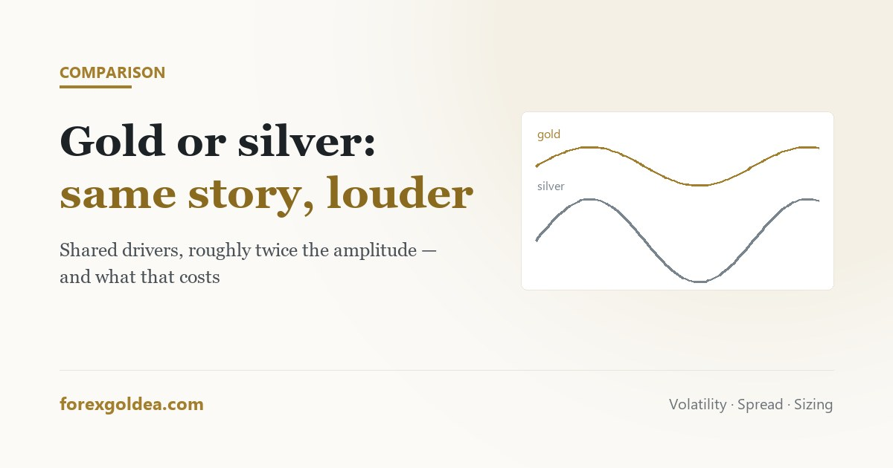

What actually moves XAU/USD, how the arithmetic of pips, lots and leverage really works, and what changes the day you hand the chart to software. No signals, no certainties — just the parts worth understanding before money is involved.

Shared macro drivers, roughly twice the amplitude, and an industrial demand story gold does not carry — plus what that does to position size.
What the metal is, what moves it, and when it actually trades.
Pips, lots, spread and leverage — the arithmetic every gold position runs on.
Ways of trading gold that survive contact with a real account.
The part no indicator fixes: bias, discipline, and knowing when you're ready.
If you hand gold to an Expert Advisor, these are the terms of that deal.
Legality, account types and the practical questions readers keep sending in.